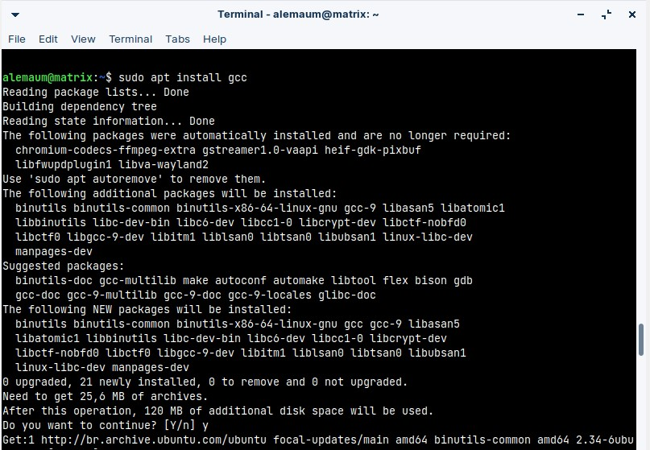
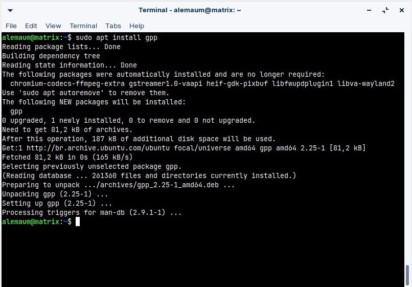

Primeiro, vamos começar com a instalação na própria linha de comando, já que é a forma mais prática e direta ao ponto.
Para conseguir usar essas duas linguagens de programação no sistema, basta realizar a instalação de dois pacotes. O gcc (para executar a linguagem de programação C) e o gpp (que é o pacote para executar programas na linguagem de programação C++).
> sudo apt install gcc

> sudo apt install gpp
